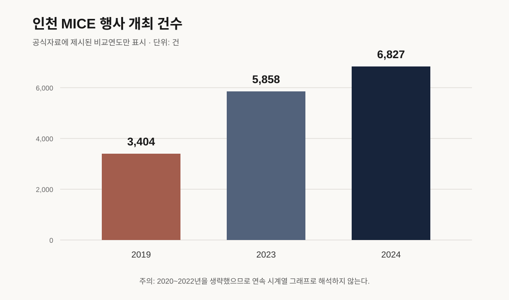

시장 검증자료
시장·정량근거
MICE 총량과 실제 로컬기프트 수요를 구분한다
결론
공개자료는 인천에 MICE·관광기관과 지역상품 정책기반이 존재함을 보여준다. 로컬기프트 발주액·단가·구매기관·재주문율은 확인되지 않으므로 잠재고객 20곳의 견적과 발주로 검증한다.
1. 핵심수치
| 지표 | 값 | 기준 | 한계 |
|---|---|---|---|
| MICE 행사 | 6,827건 | 2024 | 선물 발주건수 아님 |
| MICE 참가자 | 약 320만 명 | 2024 | 상품 구매자 아님 |
| 경제적 파급 | 약 1조 7천억원 | 2024 | 상품 시장규모 아님 |
| KME 참가·상담 | 약 3,000명·4,000건 | 2024 | 단일행사이며 기프트 상담 아님 |
| 관광스타트업·최대자금 | 15개사·3,800만원 | 2026 | 선정 보장 아님 |
| 관광기념품 역대 수상작 DB | 1,978개 | 조회일 2026-07-15 | 벤치마크이며 수요표본 아님 |
| 2025 최종 수상작 | 25개 | 2025 | 판매량·발주량 아님 |
| 구매실험 | 3,203명·7개 실험 | 2025 | 중국 가상실험 |
| 체계적 문헌고찰 | 248편 | 1981~2020 | 국내 시장규모 아님 |

2. 말할 수 있는 것
- 인천에 행사·MICE 운영과 참가자 환대업무가 존재한다.
- 개항장은 문화관광 거점이며 지역특화상품이 정책과제다.
- 관광굿즈·가공식품의 판로지원 사례가 있다.
- 기념품 연구는 문화표현과 함께 실용성·품질·휴대성·진정성을 다룬다.
- 수상작 DB는 상품군과 표시가격의 비교자료로 사용할 수 있다.
3. 아직 말할 수 없는 것
- 담당자가 기존 선물에 불만족한다.
- 평균 주문이 30·50·100세트다.
- 3만~4만원 지불의사가 있다.
- 개항장 상품이 일반 판촉물보다 선호된다.
- 연간 시장규모가 얼마다.
4. SOM 계산
접촉 가능한 구매기관 × 확인된 행사횟수 × 확인된 주문수량 × 실제 공급단가
320만 참가자에 키트가격을 곱하지 않는다. 값이 없으면 미확인으로 남긴다.
5. 출처
인천 B2B 로컬기프트 정량근거